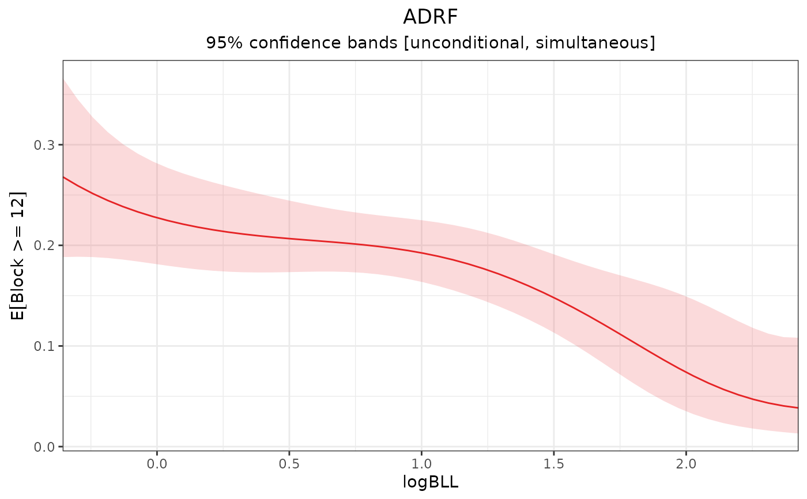
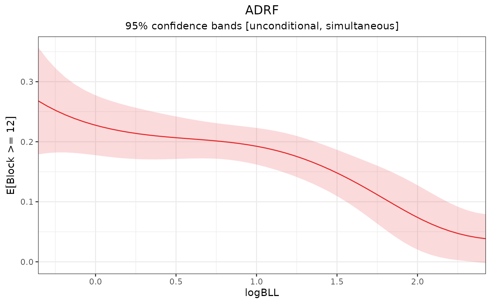
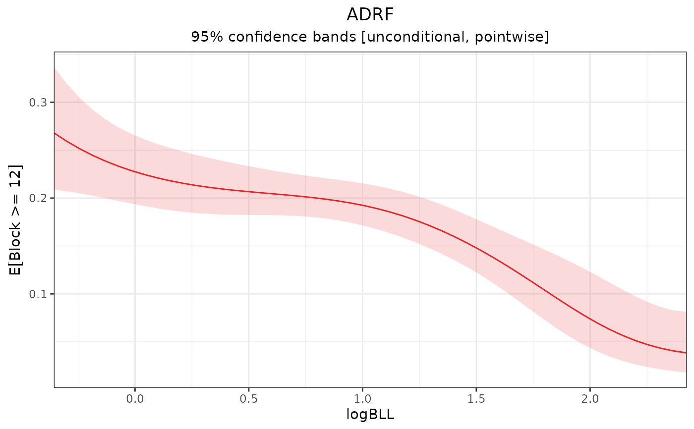
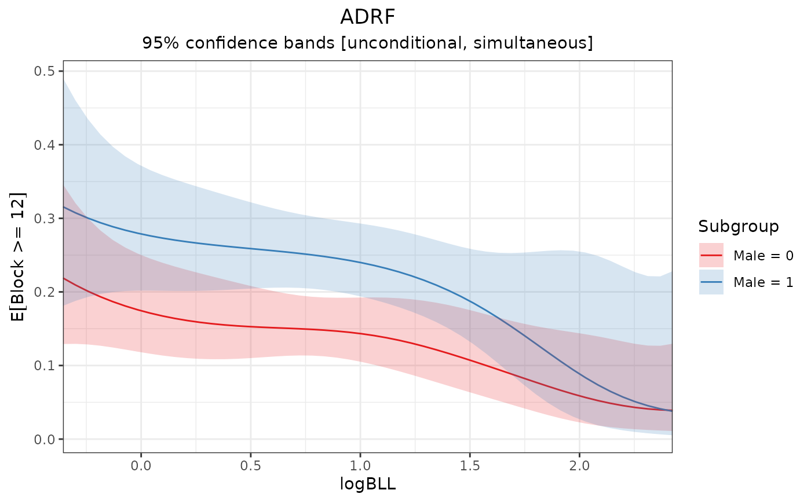
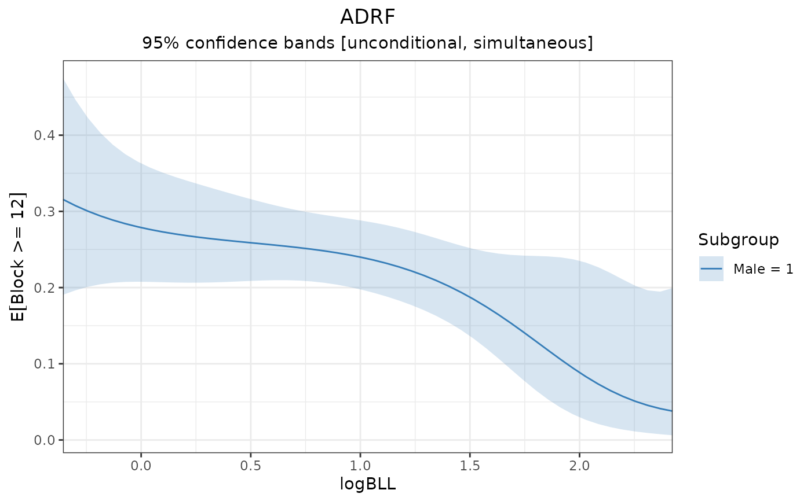
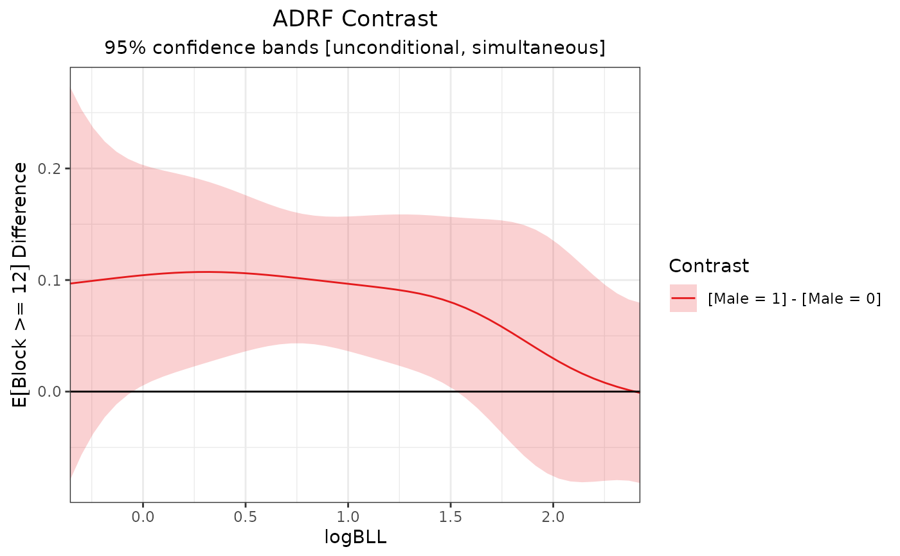

plot() plots an effect curve and its confidence band.
Usage
# S3 method for class 'effect_curve'
plot(
x,
conf_level = 0.95,
simultaneous = TRUE,
null = NULL,
subset = NULL,
proj = NULL,
transform = TRUE,
ci.type = "perc",
df = NULL,
...
)Arguments
- x
an
effect_curveobject; the output of a call toadrf()or functions that modify it.- conf_level
the desired confidence level. Default is .95 for 95% confidence bands.
- simultaneous
logical; whether the computed confidence bands should be simultaneous (TRUE) or pointwise (FALSE). Simultaneous (also known as uniform) bands cover the full line at the desired confidence level, whereas pointwise confidence bands only cover each point at the desired level. Default isTRUE. See Details.- null
the value at which to plot a horizontal reference line. Default is to plot a line with a y-intercept of 0 when the effect curve is an AMEF, a curve contrast, or a reference effect curve, and to omit a line otherwise. Set to
NAto manually omit the line.- subset
an optional logical expression indicating the subset of the subgroups to plot. Can only be used when
bywas supplied to the original call toadrf(), and only to refer to variables defining subgroups.- proj
an optional
curve_projectionobject, the output of a call tocurve_projection(). Supplying this adds the projection curve to the effect curve plot.- transform
whether to compute intervals on the transformed estimates. Allowable options include
TRUE,FALSE, or a function specifying a transformation. Ignored unlessxis an ADRF. See Details.- ci.type
string; when bootstrapping is used in the original effect curve, what type of confidence interval is to be computed. Allowable options include
"perc"for percentile intervals,"wald"for Wald intervals, and other options allowed byfwb::summary.fwb(). Whensimultaneous = TRUE, only"perc"and"wald"are allowed. Default is"perc". Ignored when bootstrapping is not used.- df
the "denominator" degrees of freedom to use for the critical test statistics for confidence bands. Default is to use the residual degrees of freedom from the original model if it is a linear model and
Infotherwise.- ...
ignored.
Value
A ggplot object that can modified using functions in ggplot2. Below are some common tasks and instructions to perform them. Note all should be run after running library("ggplot2").
Change the position of the legend:
theme(legend.position = "{POSITION}")Remove the legend:
theme(legend.position = "none")Change the color of the plotted line:
theme(geom = element_geom(ink = "{COLOR}")Change the color scheme of the plotted lines:
scale_color_brewer(aesthetics = c("color", "fill"), palette = "{PALETTE}")Change the title, subtitle, or axis labels:
labs(title = "{TITLE}", subtitle = "{SUBTITLE}", x = "{X-AXIS}", y = "{Y-AXIS}")Change the y-axis range:
coord_cartesian(ylim = c({LOWER}, {UPPER}), expand = FALSE)
Strings in brackets are to be changed by the user. Refer to the ggplot2 documentation for other options.
Details
plot() displays the effect curve in a plot. The solid line corresponds to the effect curve and the ribbon around it corresponds to its confidence band. When null is not NA, an additional flat line at null is displayed. When proj is supplied, a dashed line corresponding to the projection is added.
When by is supplied to adrf(), plot() produces an effect curve plot for each subgroup. When x is the output of a call to curve_contrast(), plot() produces an effect curve plot for each treatment contrast.
Transform
The usual confidence bands assume the estimates along the effect curve are normally distributed (or t-distributed when df is not Inf). However, when the outcome is bounded (e.g., a probability bounded between 0 and 1), this assumption may not be valid for the ADRF in finite samples. transform transforms the estimates to ones that are unbounded and computes the corresponding distribution of transformed estimates using the delta method. By default, if a generalized linear model is used for the outcome with a non-identity link function, the estimates are transformed by the link function to be on an unbounded scale. Note this is not the same as using the linear predictor for the effect curve; this is simple a transformation of the estimated points along the curve already computed. Confidence bands are computed using the transformed estimates before being back-transformed to ensure they are within the bounds of the outcome.
Simultaneous confidence bands
Simultaneous confidence bands ensure the whole effect curve, not just a given individual point, is contained within the band at the given confidence level. These are wider than pointwise bands to reflect that they are covering multiple estimates, which otherwise would decrease the true coverage rate from that specified. plot() uses the "sup-t" simultaneous confidence band, which is the smallest one-parameter band that covers the whole effect curve at the desired rate.
See also
adrf()for computing the ADRFsummary.effect_curve()for testing hypotheses about an effect curve
Examples
data("nhanes3lead")
fit <- glm(Block >= 12 ~ poly(logBLL, 3) *
Male * (Age + Race + PIR + NICU +
Smoke_Pregnant),
data = nhanes3lead,
family = binomial)
# ADRF of logBLL on P(Block >= 12)
adrf1 <- adrf(fit, treat = "logBLL",
n = 50) #using 50 to speed up examples
# Plot the ADRF; simultaneous inference,
# CIs computed on transformed estimates
plot(adrf1)

# Plot the ADRF; simultaneous inference,
# CIs computed on original estimates
plot(adrf1, transform = FALSE)

# Plot the ADRF; pointwise inference
plot(adrf1, simultaneous = FALSE)

# ADRF within subgroups
adrf2 <- adrf(fit, treat = "logBLL",
by = ~Male, n = 50)
# Plot subgroup ADRFs
plot(adrf2)

# Plot ADRF in one subgroup
plot(adrf2, subset = Male == 1)

# ADRF contrast
adrf_contrast <- curve_contrast(adrf2)
plot(adrf_contrast)
